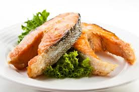

Milk
Milk is a nutrient-rich beverage considered a significant source of protein, particularly casein and whey, along with essential minerals like calcium, phosphorus, and potassium
4.9%
Meat
When describing meat in relation to nutrition facts, it's important to highlight its high protein content, significant source of essential vitamins like B12, and minerals like iron and zinc
1.2%

Fish
Fish is considered a highly nutritious food, providing a rich source of high-quality protein, essential omega-3 fatty acids, vitamins like vitamin D and B complex, and various minerals including selenium, iodine, phosphorus, calcium, iron, and zinc
10%-45%